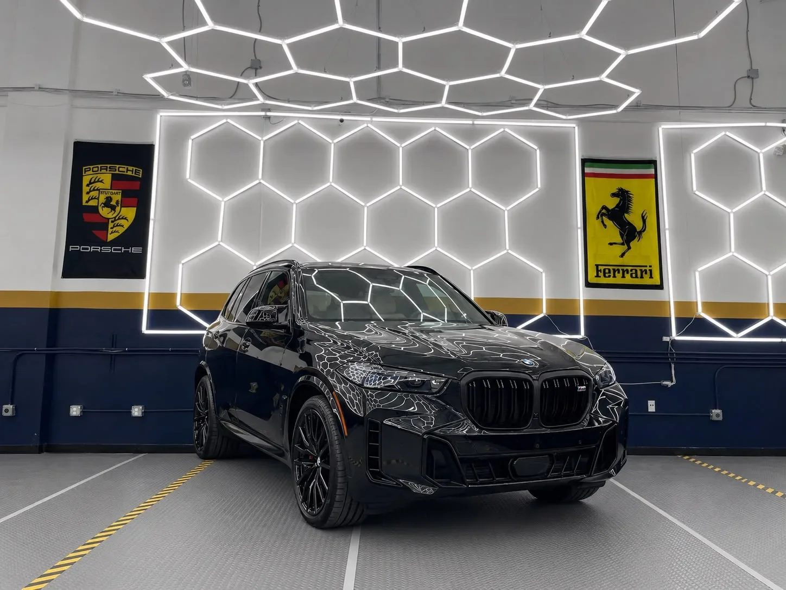
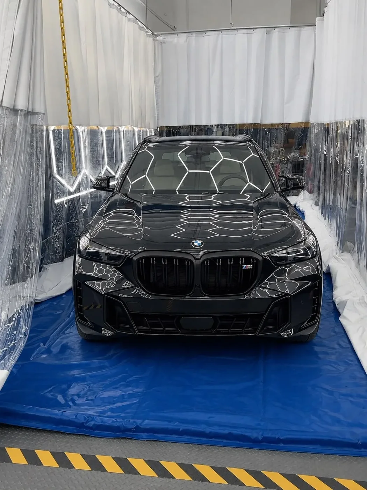
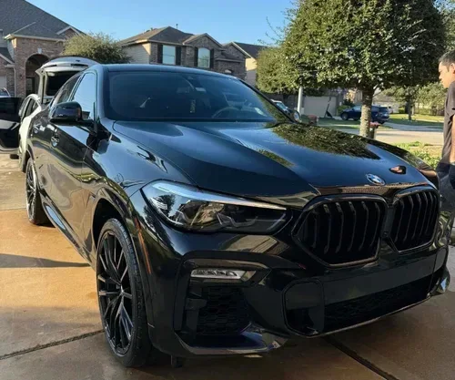
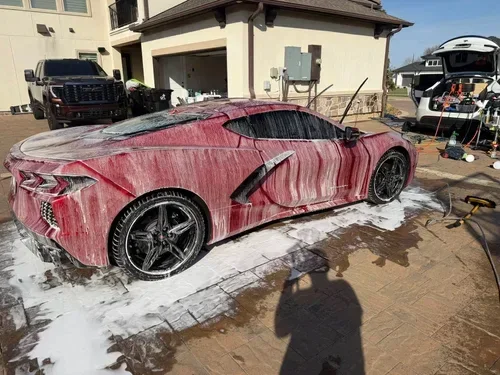
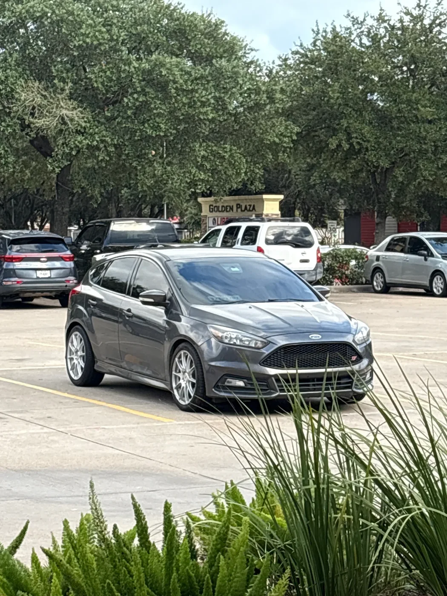
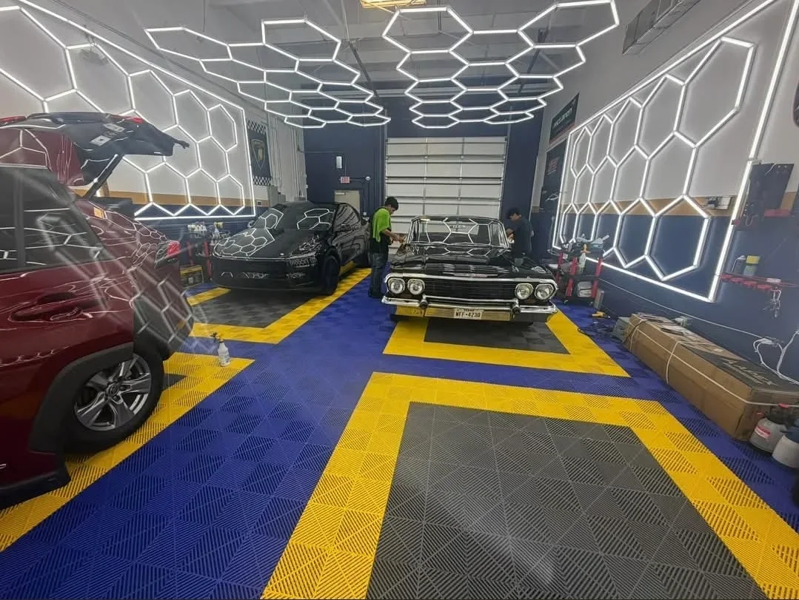

99% UV protection
Helps protect your skin, dashboard, seats and trim from the UV rays that contribute to fading.

Less heat and glare. 99% UV protection. A cleaner look for your ride.
Nano-ceramic film, carefully installed by the team at A&A Quality Auto Spa. Your local, family-owned shop in Richmond.
$299 for sedans. SUVs and trucks quoted by vehicle. Confirm glass coverage, removal needs and taxes with the shop.
Texas sun can make every trip uncomfortable. HITEK Ceramic IR helps reduce heat and glare, protects your interior from UV exposure and adds the privacy and finish you want.
Helps protect your skin, dashboard, seats and trim from the UV rays that contribute to fading.
Ceramic IR offers up to 75% infrared rejection, helping take the edge off the heat through your glass.
Choose a finish that suits your vehicle and reduces glare, with guidance from the A&A team.
Non-metallic ceramic film keeps your phone, GPS and toll tag working without metal-related interference.
Ceramic IR performance listed by A&A; 75% infrared rejection is specified at the 5% shade. Performance varies by shade and glass. Warranty terms apply.

A&A Quality Auto Spa is a local, family-owned shop specializing in automotive tint, paint protection film and ceramic coatings. From choosing your film to the final inspection, the team helps you understand what your vehicle needs and how to care for the result.
Get to know A&A's $299 ceramic window tint offer: the HITEK film, the Richmond shop and the warranty behind your installation.
HITEK Ceramic IR window tint for sedans, professionally installed at A&A. SUVs and trucks are quoted by vehicle; confirm included windows before booking.
Nano-ceramic tint with 99% UV protection and up to 75% infrared heat rejection at the 5% shade. Non-metallic film keeps your phone and GPS connected.
Visit A&A Quality Auto Spa at 1810 First Oaks St, Suite 190. Call or text the local team to discuss your ceramic tint shade and appointment.
Explore A&A's own vehicle gallery and customer Google reviews below. Get a closer look at the shop before booking your ceramic window tint.
Your HITEK ceramic film includes a lifetime manufacturer warranty against bubbling, peeling, cracking and color fading. Ask A&A for the written terms.
Keep newly tinted windows up for 3–5 days while the film cures. A&A provides aftercare guidance so you know how to look after your new tint.
Ceramic IR performance varies by shade and glass. Confirm glass coverage, existing-tint removal and taxes with A&A before booking. Warranty terms apply.
A closer look at the shop and vehicle care work featured in A&A's own website gallery.



“Looks amazing, interiors way less hot”Read this review on Google ↗

“I want to thank Abraham and his team 1, for the customer service 2, for the attention to detail”Read this review on Google ↗
“Abraham took his time in explaining the levels of tint and options.”Read this review on Google ↗
“I had a ceramic coating and window tint done for my truck. They did a great job”Read this review on Google ↗
“Had both of my cars detailed, ceramic-coated, and with the latest tech in window tint replaced.”Read this review on Google ↗
“He is very knowledgeable, professional, and offers very reasonable prices. Highly recommended!”Read this review on Google ↗
Review excerpts checked October 15, 2026. Individual visits may include other services or film packages; Rosie's review is for Ceramic Ultra.
Start with your vehicle. A&A will confirm the package and appointment with you.
SUVs and trucks quoted by vehicle. Confirm glass coverage, removal needs and taxes with A&A.
Prefer a conversation? (832) 993-8411 ↗The offer is HITEK Ceramic IR window tint for sedans. SUVs and trucks are quoted by vehicle. Confirm the exact glass coverage, any old-film removal and applicable taxes with A&A before booking.
A&A lists a typical window tint appointment at 2–4 hours. Your vehicle, selected coverage and any old tint removal can affect the time. The shop will confirm your schedule.
Tell the team how you use your vehicle and what matters most: visibility, privacy, glare or comfort. They can recommend a shade for each window and confirm applicable tint requirements.
HITEK Ceramic IR is non-metallic and signal-safe, so it is designed to work with your phone, GPS and toll tag.
A&A advises waiting 3–5 days after installation. Some moisture or haze may appear while the film cures. Follow the care instructions given at pickup.
A&A lists a transferable lifetime manufacturer warranty on its HITEK films, covering bubbling, peeling, cracking and color fading. Ask the team for the written terms and your warranty documentation.
Visit A&A Quality Auto Spa at 1810 First Oaks St, Suite 190, Richmond, TX 77406. Get directions ↗ or call (832) 993-8411 to confirm availability.